Learning Goals
At the end of this Tutorial, you will be able to:
- Select font-weight/style combinations for selected font-families (typefaces) from the Google Fonts website.
- Add selected Google Fonts CSS links to the <head> of a web page.
- Add selected Google Fonts names to the CSS font-family property in a stylesheet file.
Sample files to download
Download the following web page to your websites/exercises folder
Download the following stylesheet to your websites/exercises/css folder
Download the following stylesheet to your websites/assets/css folder
Updating the style-3 stylesheet
Your first task is to update the apperance of the page-3.html web page by adding new style rules to its linked style-3.css stylesheet.
In VS Code, open the style-3.css file and update the .section-selector-1 declaration block as shown below.
.section-selector-1 { background-color: #000 } .section-selector-1 .badge span { background-color: #fff; color: #000 } .section-selector-1 h2, .section-selector-1 p { color: #fff } .section-selector-1 h2 { letter-spacing: 1px } .section-selector-1 h2 span { color: var(--amber-400) } .section-selector-1 p { font-size: var(--font-size-md) }
Save the style-3.css stylesheet and view the linked page-3.html web page in your browser. The first <section> block of content should look as shown below.

Update the .section-selector-2 declaration block as follows.
.section-selector-2 { background-image: linear-gradient(90deg, var(--sky-100), var(--sky-300)) } .section-selector-2 h2 { letter-spacing: 1px } .section-selector-2 h2 span { color: var(--red-600) } .section-selector-2 p { font-size: var(--font-size-md) }
Save the style-3.css stylesheet and view the linked page-3.html web page in your browser. The second <section> block of content should look as shown below.
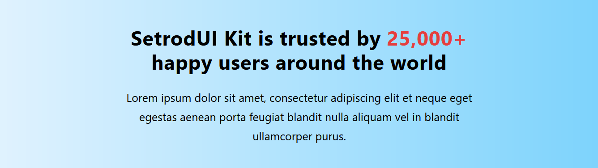Update the .section-selector-3 declaration block as follows.
.section-selector-3 { background-color: var(--teal-400) } .section-selector-3 h2 { font-size: var(--font-size-xxl) }
Save the style-3.css stylesheet and view the linked page-3.html web page in your browser. The third <section> block of content should look as shown below.
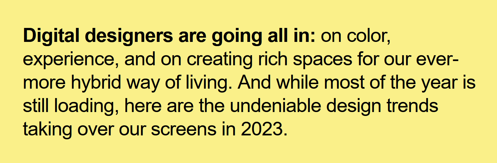Update the .section-selector-4 declaration block as follows.
.section-selector-4 { background-color: var(--trend-800) } .section-selector-4 .badge span { background-color: transparent; color: var(--sky-400); font-size: var(--font-size-base) } .section-selector-4 h2 { color: #fff } .section-selector-4 p { color: var(--gray-200); font-size: var(--font-size-md) }
Save the style-3.css stylesheet and view the linked page-3.html web page in your browser. The fourth <section> block of content should look as shown below.
Update the .section-selector-5 declaration block as follows.
.section-selector-5 h2 { font-size: var(--font-size-xxl) } .section-selector-5 h3 { font-size: var(--font-size-xl) }
And update the .section-selector-6 declaration block as follows.
.section-selector-6 { background-color: var(--purple-200) } .section-selector-6 h2 { letter-spacing: 3px; font-size: var(--font-size-xxxl); color: var(--blue-800) } .section-selector-6 h2 span { color: var(--red-600) } .section-selector-6 p { font-size: var(--font-size-md) }
Save the style-3.css stylesheet and view the linked page-3.html web page in your browser. The sixth <section> block of content should look as shown below.
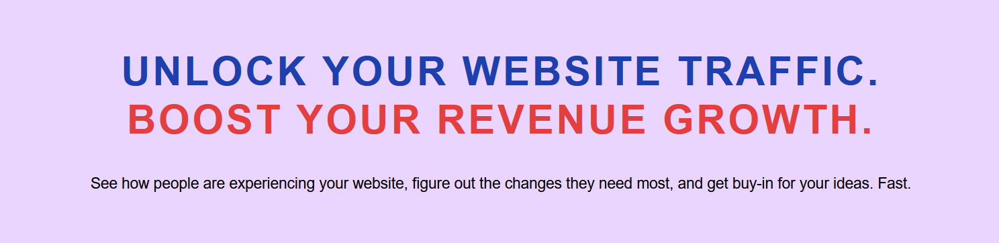About Google Fonts
Google Fonts offers the Internet’s largest collection of open-source, royalty-free fonts. All 900-plus fonts can be used without restriction for personal, not-for-profit or commercial web projects.
Below is a screenshot of the Google Fonts home page at:

To preview a particular font, click on it. To see how a few words of text will look when styled in the selected font, type your chosen text in the Type here to preview text box.

Google Fonts: the three steps
There are three basic steps to using Google Fonts. THey are as follows.
- Select your font: From the Google Fonts website you choose the weight(s) and style(s) of the font-family you want to use.
- Copy-and-paste: You copy the HTML code generated by the Google Fonts website into the <head> of every page on which you want to use you chosen font(s).
 In the example above, the name of the font is ‘Merriweather’.
In the example above, the name of the font is ‘Merriweather’. - Update your CSS file: Edit the font-family styles rules in your CSS file with the names of your chosen fonts. For example, to use the ‘Kinsta’ font for your <h1> headings, you would edit the h1 selector in your CSS file as follows. 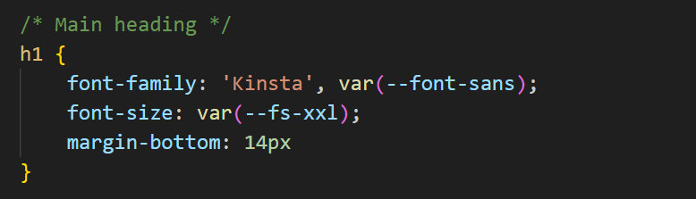 To use the ‘PT Sans’ font for your <h3> headings, you would edit the h3 selector in your CSS file as follows. 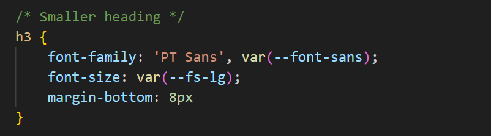 And if you wanted to use the ‘Work Sans’ font for your text paragraphs, you would edit the p selector in your CSS file as follows. 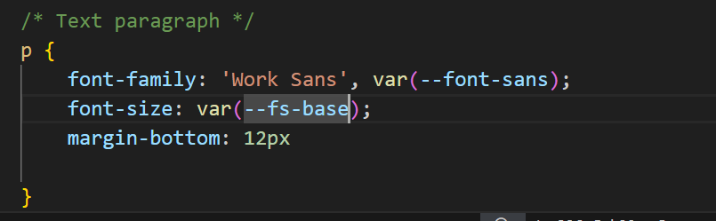 Note that the font name is always wrapped in a pair of single quotation marks (‘ ’). You can also see that every Google Font name is followed by a comma (,) and what is called a fallback font – either serif or sans-serif. This is the font that is displayed when the web page is viewed without a live Internet connection.
Popular fonts in 2023
As with much else, there are fashions and trends in fonts. Here are the more widely-used serif and sans-serif fonts at the moment.

Adding fonts to section-selector-1
Follow the steps below:
Obtaining the Google Fonts code
Your first task is to go to the Google Fonts website, select the weight/styles of your required font-family, and then to copy the related HTML code.
- In your web browser, go to the Google Fonts website at the address below: https://fonts.google.com
- In the Search box at the top-left of the screen, type the font-family (typeface) name of Work Sans. 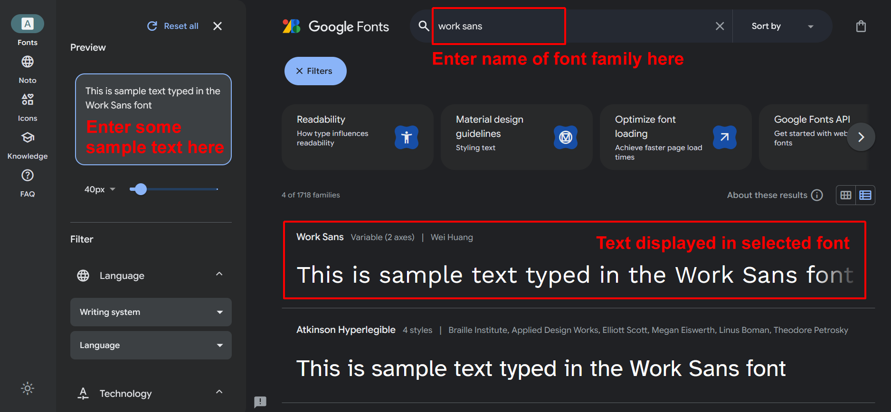 Next, in the search results displayed in the lower half of the screen, click on Work Sans.
- You are now shown a list of the styles and weights available for your selected font-family. For Work Sans, there are 17 in total.
- Using the Select option at the right of the screen, select the following two font weight/style options:
Regular 400
Bold 700 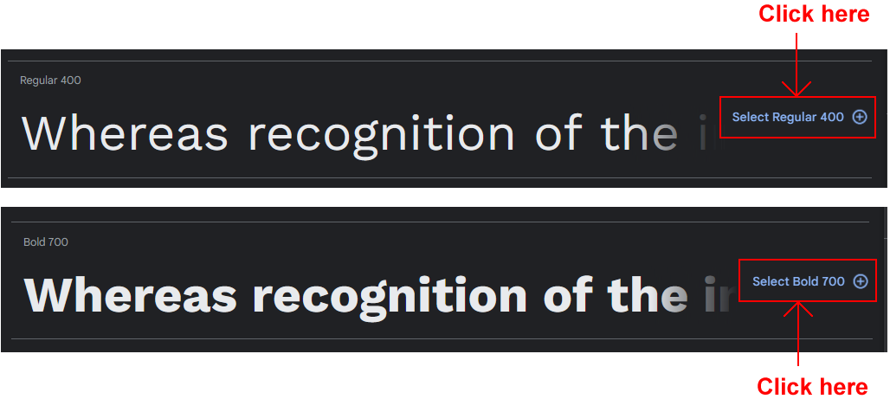 - At the lower-right of the screen, as you select each font weight/style, you can see that Google Fonts is creating the relevant HTML code. 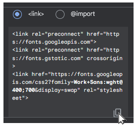 After selecting the two font weights/styles, move your mouse to the box in the lower-right corner, and then click the Copy icon to copy the HTML code.
Updating your web page with the Google Fonts code
Next, you will paste the HTML code you copied from Google Fonts into your web page.
- In VS Code, open the page-3.html web page.
- Just before the closing </head> tag, paste in the copied HTML code.
Optionally, add the following comment line just above the pasted Google Fonts code.
<!-- Google Fonts -->Your web page <head> should now look similar to that below. 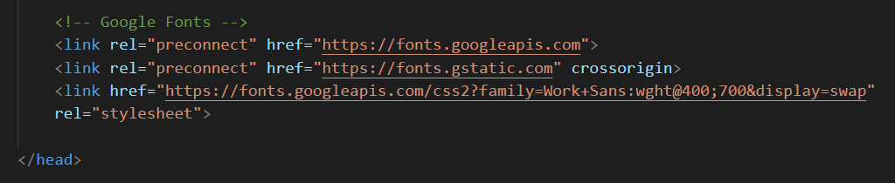 - Save your page-3.html web page.
When you view the page-3.html page in a web browser, you can see nothing has changed. For your selected Google Font to display, you also need to update the style-3.css stylsesheet file linked to the web page.
Updating your stylesheet with the font-family name
Your final task is to update the linked stylesheet with the font-family name of the Google Font you want to use in your web page. Here are the steps.
- In VS Code, open the following stylesheet file: style-3.css
- Update the h2 and p selector within the .section-selector-1 container class as shown below. 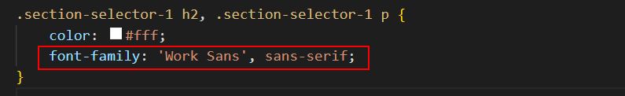
- Save your style-3.css file and view the page-3.html page in your web browser.
Task completed.
Adding fonts to section-selector-2
Follow these steps:
- In the Google Fonts tab of your web browser, click the Fonts option in the menu across the top of the web page. 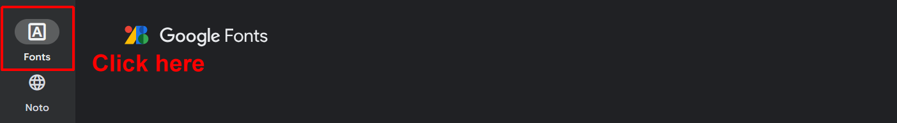 This returns you to the Google Fonts home page.
- In the Search box at the top-left of the screen, type the font-family (typeface) name of Outfit and then click this font-family in the search results.
- Using the Select option at the right of the screen, select the following two font weight/style options:
Regular 400
Bold 700 - When finished, at the box at the lower-right of the screen, click the Copy icon to copy the HTML code and then copy it.
- In the <head> of the web page, select the existing Google Fonts code, and paste over it. 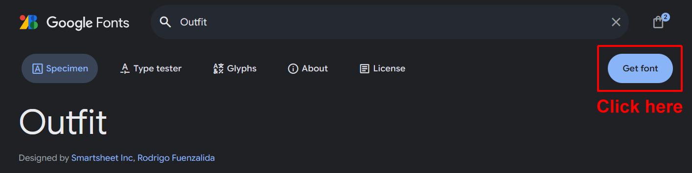 You can see that Google Fonts has remembered your previous font selection. Save the page-3.html file
- In VS Code, display your style-3.css stylesheet, and make the following two new styles. 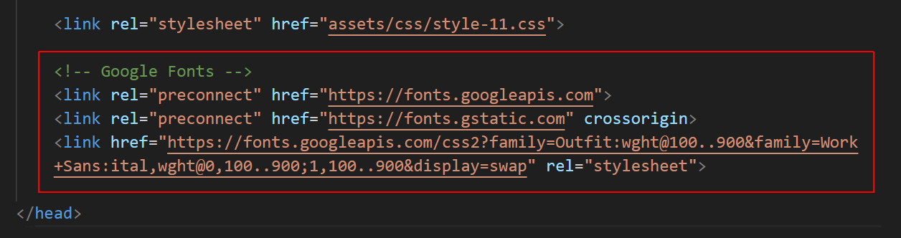
- When finished, save the style-3.css file, and view the page-3.html web page in your browser.
Adding fonts to section-selector-3
Follow these steps:
- In the Google Fonts tab of your web browser, click the Fonts option in the menu across the top of the web page. This returns you to the Google Fonts home page.
- In the Search box at the top-left of the screen, type the font-family (typeface) name of Inter and then click this font-family in the search results.
- Using the Select option at the right of the screen, select the following two font weight/style options:
Regular 300
SemiBold 600 - When finished, at the box at the lower-right of the screen, click the Copy icon to copy the HTML code and then copy it.
- In the <head> of the web page, select the existing Google Fonts code, and paste over it. 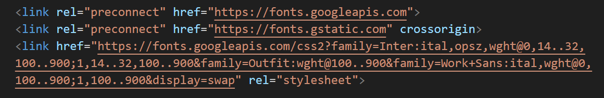 As before, Google Fonts has remembered your previous font selections. Save the page-3.html file
- In VS Code, display your style-3.css stylesheet, and make the following updates. 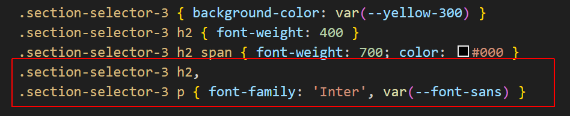
- When finished, save the style-3.css file, and view the page-3.html web page in your browser.
Adding fonts to section-selector-4
For this section, you will use a monospace font that i aved a a custom property
- In VS Code, display your style-3.css stylesheet, smake the following updates.
- When finished, save the style-3.css file, and view the page-3.html web page in your browser.

Adding fonts to section-selector-6
For this section, you will use two different Google Fonts: Bebas Neue for the h2 heading and Inter, which you have already selected, for the p paragraph text. Here are the steps:
- In the Google Fonts tab of your web browser, click the Fonts option in the menu across the top of the web page. This returns you to the Google Fonts home page.
- In the Search box at the top-left of the screen, type the font-family (typeface) name of Bebas Neue and then click this font-family in the search results.
- Using the Select option at the right of the screen, select the following font weight/style options: Regular 400
- In the box at the lower-right of the screen, click the Copy icon to copy the HTML code.
- In the <head> of the web page, select the existing Google Fonts code, and paste over it. 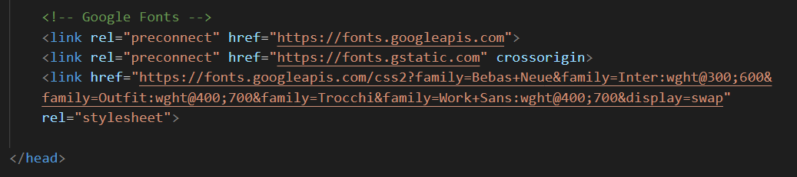 As before, Google Fonts has remembered your previous font selections. Save the page-3.html file
- In VS Code, display your style-3.css stylesheet, and make the following updates. 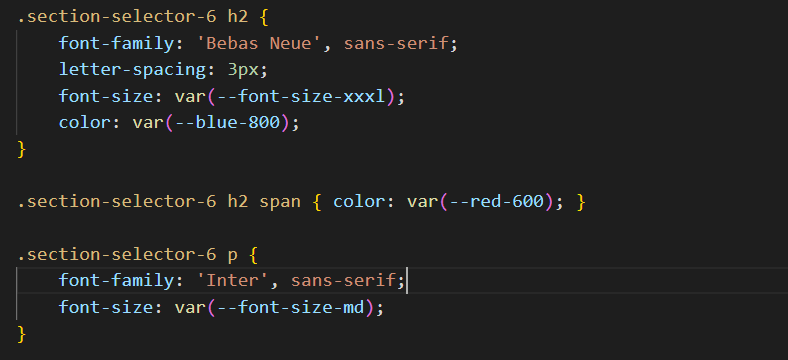
- When finished, save the style-3.css file, and view the page-3.html web page in your browser.
Uploading your files to GitHub
After finishing your web pages and stylesheets, you are now ready to upload them to your account on GitHub.
- Open a new tab in your web browser and go to GitHub.com. If you are not already signed in to your GitHub account, sign in now.

- On your GitHub home page, click the ‘repo’ that holds your web pages. Its name will look as follows, where username is your chosen username on GitHub.
username.github.io

- On the next GitHub screen displayed, near the right of the screen, you can see a button named Add file. Click on it.

- From the dropdown list displayed, choose the option Upload files.

- In File Explorer (Windows 10) or Finder (Apple Mac), drag-and-drop your index.html file and your 📁 assets and 📁 exercises sub-folders to upload them to your repository on GitHub.

- Scroll down to the bottom of the GitHub screen, and accept or edit the short message (Add files via upload) in the Commit changes box.
- Finally, click the green Commit changes button to upload your files.

Your updated home page and four sample pages are now published on GitHub at web addresses similar to the following:
https://username.github.io/index.html
https://username.github.io/exercises/page-3.html
https://username.github.io/exercises/page-3.html
https://username.github.io/exercises/page-3.html
https://username.github.io/exercises/page-3.html
It may take a few minutes for your uploaded files to appear on GitHub.